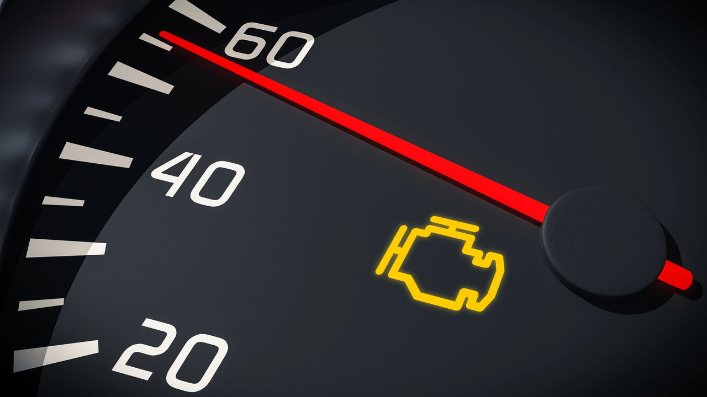

2. Luz do Motor (Check Engine)
Quando essa luz acende, pode indicar um problema no motor ou no sistema de emissões.
O que significa a luz "Check Engine" acesa?
Problema no motor ou sistema de emissões Freio de mão ativado
Falha no cinto de segurança